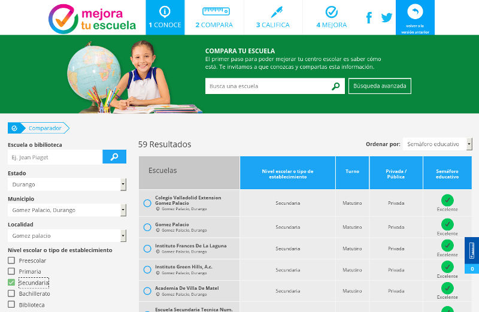

Los datos abiertos son los datos digitales de carácter público que son accesibles en línea, es decir, por Internet, y que también pueden ser usados, reutilizados y redistribuidos por cualquier interesado.
Ampliando la definición anterior, los datos abiertos constituyen una poderosa herramienta que mejora la forma de trabajar, dentro y fuera del gobierno federal, estatal o municipal. Hacia el interior aumenta la eficiencia del trabajo entre las dependencias; hacia el exterior, se vuelven componentes básicos para resolver problemáticas del ciudadano, empresas y organizaciones civiles.
Cabe aclarar que datos abiertos no se refiere a datos personales, confidenciales, reservados o de seguridad nacional. Ni tampoco, que datos abiertos es lo mismo que transparencia; más bien, la transparencia es un beneficio adicional de tener una política de datos abiertos.
¿Para qué sirven los datos abiertos?
Los datos abiertos tienen el potencial de promover el desarrollo de nuevos instrumentos, conocimiento, productos y servicios. Con éstos, tanto el gobierno como pequeñas y grandes empresas, académicos y periodistas pueden:
- Generar crecimiento económico e innovación.
- Incrementar la eficiencia del gobierno.
- Mejorar el análisis y diseño de políticas públicas.
- Desarrollar nuevos y mejores servicios públicos.
- Fomentar la transparencia y rendición de cuentas.
- Crear impacto social.
Caso ejemplar “Mejora Tu Escuela”
MejoraTuEscuela.org es un sitio web del Instituto Mexicano para la Competitividad, A.C. que tiene como objetivos poner a disposición de los padres de familia información de interés de las escuelas públicas y privadas con el fin de transformar la educación en México.
Anteriormente a la existencia de este sitio web, como padres, era difícil encontrar datos de las evaluaciones de una o muchas escuela, los programas de apoyo a los que estén inscritas, las características de su infraestructura o la cantidad de maestros, entre muchas cosas.
MejoraTuEscuela.org integra datos abiertos de la prueba ENLACE, de la SEP, del Registro Nacional de Alumnos, Maestros y Escuelas y del Sistema Nacional de Información Estadística Educativa de la SEP. La interfaz permite de forma sencilla encontrar y comparar los datos de una o más escuelas; además es posible realizar comentarios sobre una escuela y ver los que hayan hecho otros padres.

Una política de datos abiertos no sólo requiere tecnología nueva
Estaríamos equivocados si creyéramos que para tener datos abiertos sólo se necesitara un nuevo sistema informático y su portal web para hacer pública la información. Para ser dignos de tener una política de datos abiertos habrá que revisar y cambiar los procesos que los crean, procesan y resguardan. Además de comprometernos, como servidores públicos, como las personas que trabajamos en estas labores, porque en nuestras manos están estos valiosos datos que compartiremos con todos los ciudadanos; esto implica cambiar nuestra forma de pensar y trabajar en aras de mejorar siempre.
Red México Abierto
El Gobierno Federal bajo la Estrategia Digital Nacional organizó los días 19 y 20 de febrero de 2015 el evento MX Abierto: Seminario de Innovación Pública con apoyo del Laboratorio Nacional de Políticas Públicas del CIDE y de la USAID.
Durante el mismo se hizo público el decreto por el que se establece la regulación en materia de datos abiertos. En su artículo noveno se establece que habrá convenios de colaboración con los gobiernos estatales y municipales para poner datos abiertos en el sitio de internet www.datos.gob.mx.